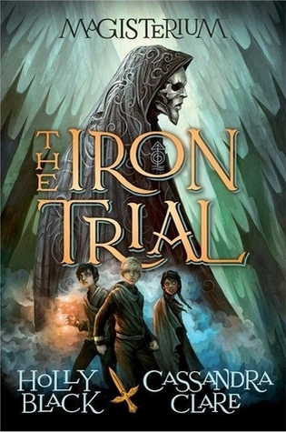

Nací y crecí en la provincia de Colón, estudiando en el colegio La Salle de Margarita. Luego a los 18 años me mudé a la ciudad de Panamá
con el fin de continuar mis estudios universitarios.
Soy una persona exrtovertida y muchas veces instensa la cuál tiene un buén corazón.
Me encantan los videojuegos y todo lo relacionado con ellos, tengo muchos talentos de los cuales quizá todavía me faltan aprender más.
Soy bueno resolviendo problemas y pensando rápido en soluciones las cuales puedan ser funcionales
Soy rápido analizando las situaaciones que me rodean e ideando soluciones
Imaginador
Tengo una gran imaginación lo que me permite pensar fuera de la caja
Alegre
Mayormente siempre intento ser alegra, la tristeza y depresión no resuelven nada
inteligente emocionalmente
Puedo ponerme en tu lugar, y entiedno si algo que pasaste o que hice yo te hizo sentir mal
de la misma forma intentare resolverlo y buscar una solución entendiendo tu punto de vista
Intenso
Puedo ser la persona más ruidosa, estridente y llamativa de una habitación, no lo hago porque quiera
lo hago porque eso añade diferencia, y si sabes canalizar mi intensidad bien, tendremos una poderosa herramienta
en las manos
Mis pasatiempos
Jugar videojuegos
Dibujar
Escuchar música
Mis libros favoritos
Título:
Mondrago: La Gran Prueba
Autor:
Ana Galán
Resumen:
"Cale debe superar un desafío para conseguir un dragón, que resulta ser Mondragó,
un dragón inusualmente grande e incapaz de volar, lo que lo lleva a tomar sus propias decisiones
para lograrlo."
Título:
Magisterium: The Iron Trial
Autor:
Cassandra Clare y Holly Black
Resumen:
"Callum Hunt, un chico con una aversión por la magia que se ve forzado a asistir a
una escuela secreta de hechiceros. En esta escuela, el Magisterium, los jóvenes aprenden
a controlar los elementos y luchan contra el "Enemigo", una fuerza de magia del caos, mientras
descubren que su propio poder está más relacionado con la magia que su padre le advirtió que evitara."

Título:
Materia Oscura
Autor:
Blake Crouch
Resumen:
"Jason Dessen, un físico y profesor de Chicago que es secuestrado y se despierta
en una realidad alternativa donde su vida ha tomado un camino muy diferente, y no es la que él conoce.
Para regresar a su propia vida y a su familia, Dessen debe navegar por un multiverso y enfrentarse a
versiones de sí mismo, convirtiéndose en un enemigo para sí mismo."
Título:
Dinero fácil en un camino difícil
Autor:
Ricardo Puello
Resumen:
""Dinero fácil en un camino difícil" describe obras que exploran los dilemas de la juventud
en contextos de pobreza y violencia, donde las opciones de "dinero fácil" (como el crimen) son
tentadoras pero destructivas, frente a la lucha por un futuro digno y la búsqueda de una verdadera
redención en sociedades marcadas por la corrupción y la falta de oportunidade."
Título:
Dominó
Autor:
Ricardo Puello
Resumen:
"Dominic es un joven médico que se enamora de Fabiola, una chica que salvó en la matanza de
Las Vegas. Pero, este camino no será fácil porque deberá luchar primero contra su futuro suegro, un
personaje poderoso y racista, e igualmente, con una sociedad injusta que aún se niega a aceptar que
ante los ojos de Dios, la raza humana debe ser considerada como una sola."
Mis películas favoritas
Acción
Título:
Valerian y los mil planetas
Director:
Luc Besson
Protagonistas:
Dane DeHaan como: Valerian | Cara Delevigne como: Laureline